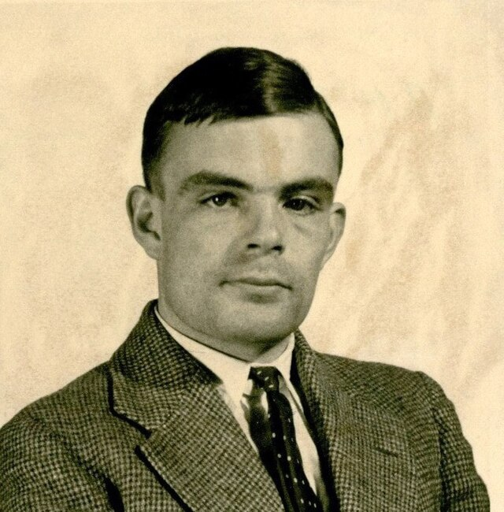
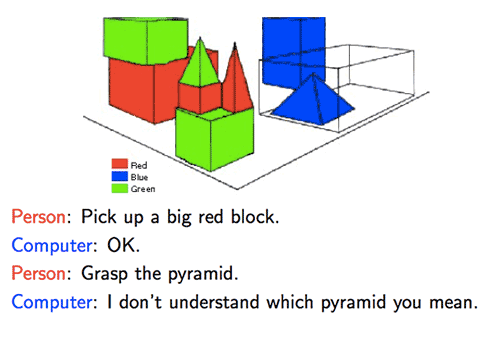
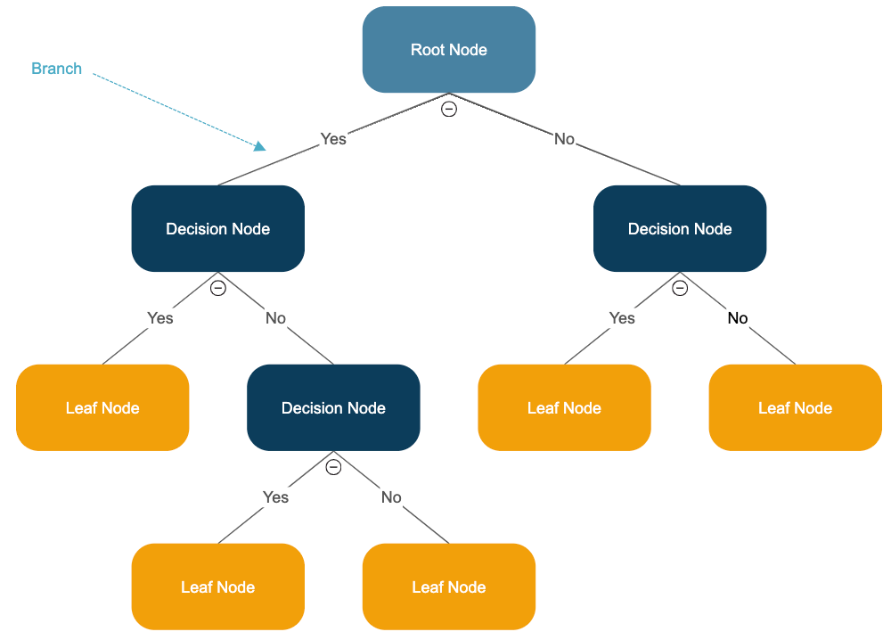

Anni '50 – Le origini teoriche
Il concetto di macchina intelligente prende forma grazie ad Alan Turing

Il concetto di macchina intelligente prende forma grazie ad Alan Turing



Vengono sviluppati i primi programmi simbolici (come ELIZA ELIZA è un chatterbot scritto nel 1966 da Joseph Weizenbaum. Il bot consiste in un analizzatore lessicale e un insieme di regole (script) che permettono al chatterbot di simulare una conversazione in inglese, gallese o tedesco. e SHRDLU SHRDLU è un programma di comprensione del linguaggio naturale sviluppato da Terry Winograd al MIT nel periodo 1968-1970. È stato scritto nei linguaggi di programmazione Micro Planner e Lisp su un computer DEC PDP-6 e un terminale grafico DEC. ). L'AI si limita a domini ristretti, come la logica e il linguaggio naturale base.
Nascono sistemi come XCON 1980.- Digital Equipment Corporations sviluppa R1 (noto anche come XCON), il primo sistema esperto commerciale di successo. Progettato per configurare gli ordini per nuovi sistemi informatici, R1 dà il via a un boom di investimenti in sistemi esperti che durerà per gran parte del decennio. , in grado di imitare le decisioni di esperti umani. È l’era della “symbolic AI Conosciuta anche come intelligenza artificiale basata su regole o logica, rappresenta un approccio fondamentale nel campo dell’intelligenza artificiale. Questo metodo prevede l’uso di simboli per rappresentare gli oggetti e le loro relazioni, consentendo alle macchine di simulare il ragionamento umano e i processi decisionali. ”, dominata dalla logica formale e dalla conoscenza codificata.


L'intelligenza artificiale si orienta verso l’apprendimento automatico. Algoritmi come le reti neurali Le reti neurali sono modelli computazionali ispirati al cervello umano, utilizzati nell'ambito dell'intelligenza artificiale per l'apprendimento automatico e il riconoscimento di pattern complessi. Questi modelli sono composti da nodi interconnessi, chiamati neuroni artificiali, che lavorano insieme per elaborare informazioni e risolvere problemi. e il decision tree Un albero decisionale è un algoritmo di apprendimento supervisionato non parametrico che viene utilizzato sia per le attività di classificazione che di regressione. Presenta una struttura gerarchica ad albero che consiste in un nodo radice, rami, nodi interni e nodi foglia. cominciano a prevalere sui sistemi esperti statici.
La disponibilità di grandi quantità di dati e la potenza di calcolo permettono lo sviluppo del deep learning. Le reti neurali convoluzionali Le reti neurali convoluzionali (CNN o ConvNet) sono un tipo specializzato di rete neurale, particolarmente efficace nell'elaborazione di dati con una struttura di griglia, come le immagini. Sono ampiamente utilizzate nell'ambito della visione artificiale per compiti come il riconoscimento di oggetti, la classificazione delle immagini e la segmentazione. (CNN) rivoluzionano il riconoscimento immagini e suoni.
Nascono modelli come GPT Il GPT (Generative Pre-trained Transformer) è una tecnologia di intelligenza artificiale basata sull'apprendimento profondo, che consente di generare testi in modo automatico. Sviluppato da OpenAI nel 2018, il GPT ha rivoluzionato il campo dell'elaborazione automatica del linguaggio naturale (NLP). , BERT BERT, acronimo di Bidirectional Encoder Representations from Transformers, è un modello di elaborazione del linguaggio naturale (NLP) sviluppato da Google. È un modello di machine learning basato su trasformatori, progettato per comprendere meglio il contesto delle parole in una frase. e DALL·E DALL-E è un modello di intelligenza artificiale, sviluppato da OpenAI, che genera immagini a partire da descrizioni testuali. Puoi dare a DALL-E una descrizione di ciò che vuoi vedere, e lui creerà un'immagine corrispondente. , capaci di generare testo, immagini e musica. L’AI diventa uno strumento di uso comune, accessibile e utilizzabile da qualsiasi utente, grazie a chatbot, assistenti vocali e piattaforme creative.
Modelli come GPT-4o GPT-4o è un modello "tutto in uno", in grado di elaborare input e output multimodali da solo come una singola rete neurale. Con i modelli precedenti, come GPT-4 Turbo e GPT-3.5, gli utenti avevano bisogno delle API OpenAI e di altri modelli di supporto per inserire e generare vari tipi di contenuti. comprendono linguaggio, immagini e audio. L’AI è sempre più personalizzata, interattiva e integrata nella vita quotidiana.